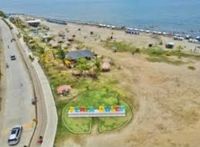
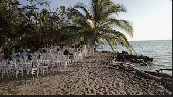
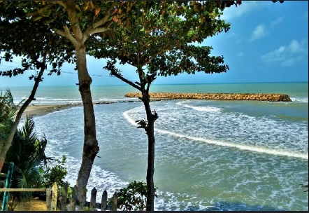

Playa Dulce
Lugar icónico de Turbo, ideal para atardeceres.
📍 Zona costera de Turbo
📞 +57 300 111 2233

Playa La Martina
Perfecta para familias y turistas en busca de tranquilidad.
📍 Vía a Necoclí
📞 +57 301 222 3344

Playa Los Manglares
Un entorno natural rodeado de fauna y flora.
📍 Carretera al Golfo de Urabá
📞 +57 302 333 4455